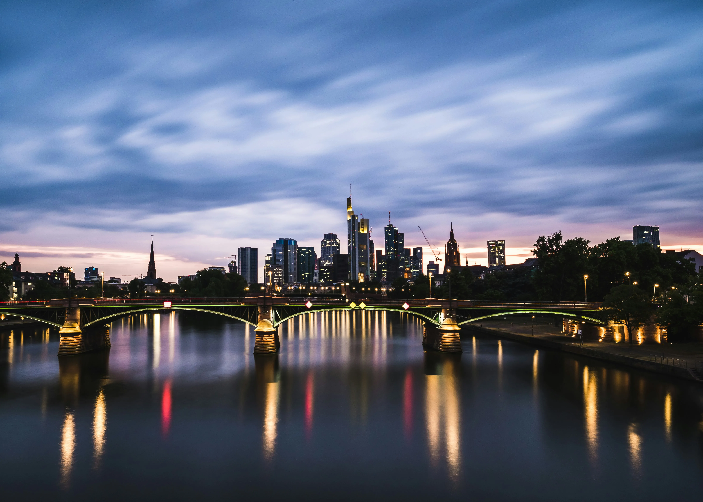
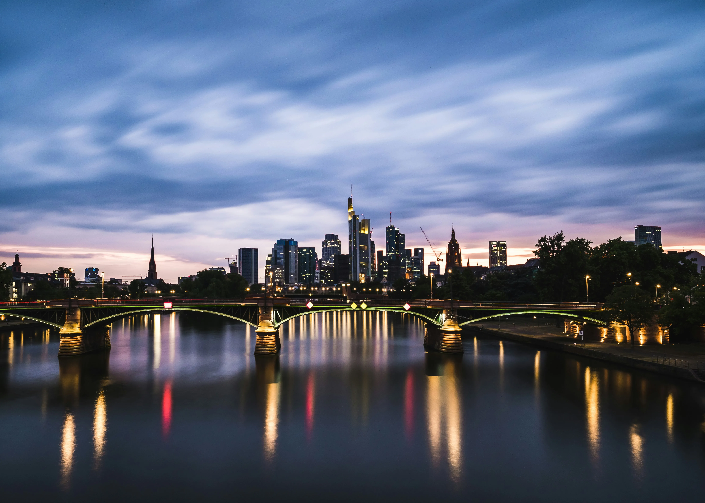
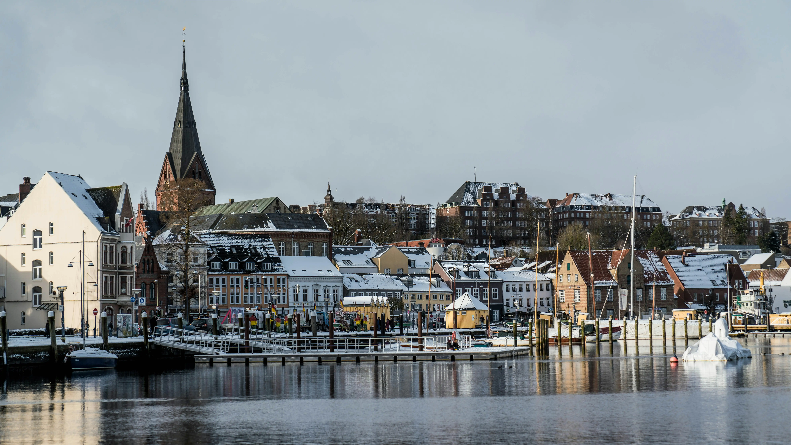
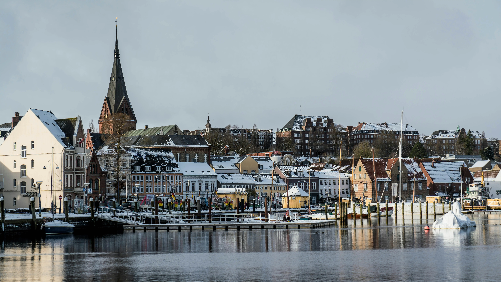
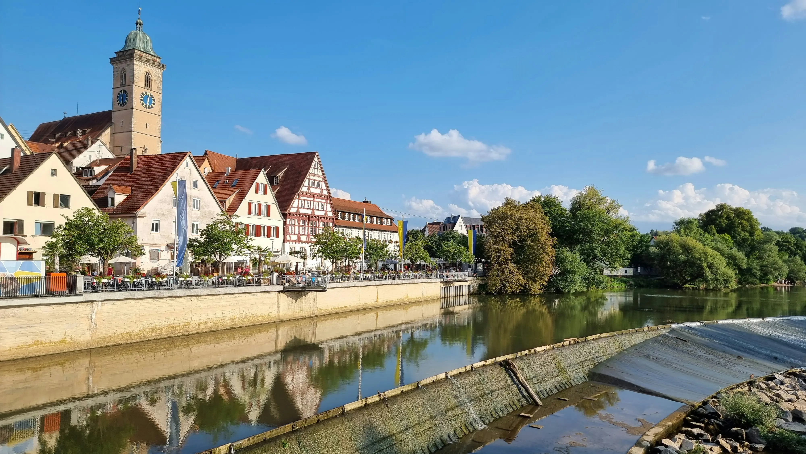
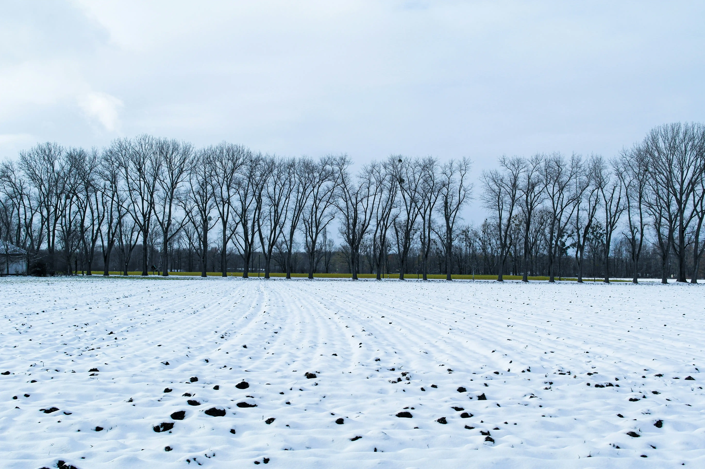

If you enjoy Christmas vibes, December is perfect for visiting the magical Christmas markets and snowy towns.

Germany is one of Europe’s most fascinating countries , it perfectly blends rich history with modern innovation. It’s known for its cleanliness, order, and stunning castles that look like they belong in fairy tales. What truly sets Germany apart is its industry , it’s the industrial heart of Europe, famous for its machinery, cars, and precise engineering. Brands like Mercedes, BMW, Audi, and Volkswagen represent German quality and attention to detail. Besides that, the country offers breathtaking nature, from the Rhine River to the Black Forest, and vibrant cities like Munich , Berlin, and Hamburg.
.webp) 

.webp) 

The best time to visit Germany is from May to September, when the weather is pleasant and cities are full of festivals.

If you enjoy Christmas vibes, December is perfect for visiting the magical Christmas markets and snowy towns.



Germany is one of the world’s leading industrial powers, often called the “engine of Europe.”
It’s globally known for its cars, machinery, and engineering excellence, with products that stand for reliability and precision.
German machines dominate global markets thanks to their efficiency, power, and long lifespan.
One of the most important industrial cities is Frankfurt , known as the heart of the German economy and a key hub for global business and manufacturing.
Frankfurt isn’t just a financial capital it also hosts major industries in technology, aviation, and mechanical engineering,
making it one of Europe’s strongest industrial and commercial centers.
Germany is home to major industrial giants like Siemens, Bosch, and Bayer.
For Germans, industry isn’t just business it’s a culture of precision and excellence deeply rooted in their society.
The secret behind German industrial quality lies in its dual education system , which combines theory with hands-on training. Students split their time between vocational schools and real work experience in factories or companies. This approach creates highly skilled workers and explains why German craftsmanship and engineering are among the best in the world.
Germans enjoy simple yet delicious food. Some famous dishes include:

Culturally, Germans are known for their punctuality, order, and attention to detail. But they also love music, festivals, and social gatherings especially Oktoberfest in Munich.
.If you want to know more about a travels Click here
.here are some instructions
.If you have any questions contact me